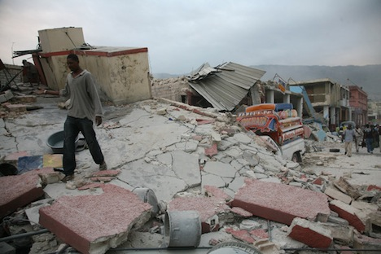
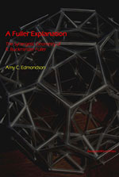
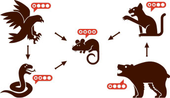
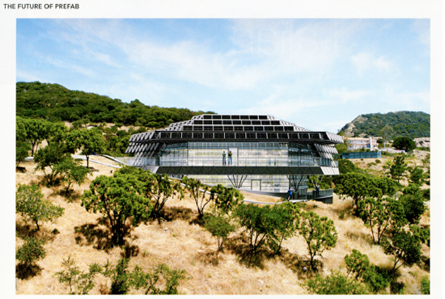
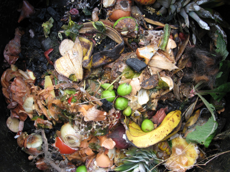
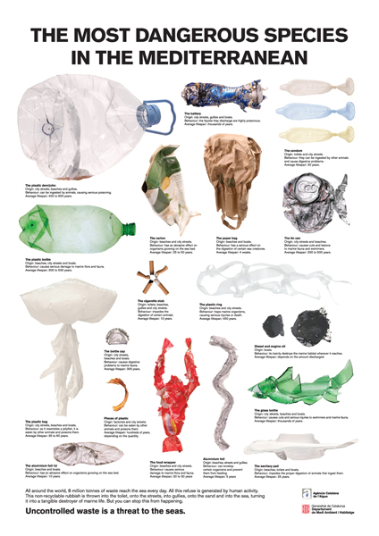
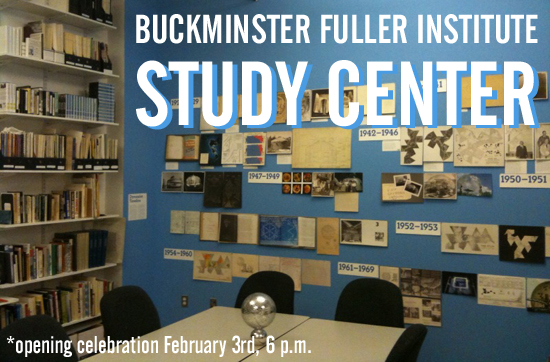

Vol. 11 No. 1
Join World Shelters and Pacific Domes in Funding Shelters and Field Hospitals in Haiti
Many thousands of Haitian families are now without shelter. Loss of life and survivors’ injuries are at an unprecedented scale for this region. Our first initiative in concert with Project HOPE and others is a 3,000 square foot field hospital in two joined 44 foot diameter Pacific Domes with World Shelters U-Domes providing interior spaces. The field hospital will be located on the outskirts of Port au Prince on the site of a now-destroyed hospital. Project HOPE is providing staffing, equipment and supplies.
Beyond the immediate imperative to provide medical care, food and water for survivors, assistance to Haiti must further the longer-term goals of rebuilding and recovery. Your support of World Shelters' Haitian relief efforts will provide a maximum value in context-appropriate shelter that will help make the transition towards permanent housing “built back better” while contributing to local economic development in Haiti.
Further information available at worldshelters.org
BFI is proud to welcome three new Board Members
The Board of Directors of the Buckminster Fuller Institute......
Featured Store Item: A Fuller Explanation by Amy Edmondson
This new edition revives an indispensable classic, originally described as “the long-awaited and outstanding new book that explains Buckminster Fuller’s Synergetics. The author, who worked closely with Fuller the last three years of his life, realized that the 1400 pages of dense prose in Fuller’s Synergetics can be explained in clear terms.”
“As Fuller's personal engineer, Edmondson gained an intimate understanding of synergetics and its potential for making humans a success on Earth. Her clear narrative translates the Synergetics books into familiar language. Read alone the book is the clearest available introduction to energetic-synergetic geometry.” - J. Baldwin
On sale now for $29.95 in our online store!
Trends & Perspectives
The NYTimes 2009 ’Year in Ideas’
Once again, The Times Magazine looks back on the past year from our favored perch: ideas. Like a magpie building its nest, we have hunted eclectically, though not without discrimination, for noteworthy notions of 2009 — the twigs and sticks and shiny paper scraps of human ingenuity, which, when collected and woven together, form a sort of cognitive shelter, in which the curious mind can incubate, hatch and feather. Unlike birds, we can also alphabetize. And so we hereby present, from A to Z, the most clever, important, silly and just plain weird innovations we carried back from all corners of the thinking world. To offer a nonalphabetical option for navigating the entries, this year we have attached tags to each item indicating subject matter. We hope you enjoy. Continue here.
Peter Pearce EcoHouse Featured in Dwell Magazine
Peter Jon Pearce caught Charles Eames’s eye with a sophisticated bent-plywood lounge chair he made in college and was soon offered a job. Flash forward 50 years to Malibu, California, where Pearce’s new EcoHouse prototype is the culmination of a lifelong quest to hone in on the basic principles that drive good design. (Download the entire article at pjpearcedesign.com)
Learn more about Peter Pearce and his work with and research of design and geometry in his book Structure in Nature is a Strategy for Design.
UK Parliament Calls for Mandatory Food Waste Collection
Food waste in the United Kingdom is a major problem, amounting to 5.3 million tonnes and an estimated ₤12 billion annually. It’s a problem big enough that a Parliamentary committee has recommended a serious plan to address it: initiating mandatory food waste pickups and banning such organic materials in the landfill.
Such a landfill ban is already under consideration for 2020, but a recent report from the Environment, Food and Rural Affairs (Efra) committee recommends the slightly more aggressive date of 2015.
Committee Chairman Michael Jack explained:
“We take the view, throughout the whole report, that waste is actually a resource...food waste has got two key opportunities to be used—either in energy from waste and the other is to home compost...we should stop throwing it away into landfill when we have these two alternatives.” (Via Treehugger.)
Related:
Composting center plans to profit from food waste
Restaurant Chain Explores Industrial Composting.
Resources
Terreform1’s ONE Prize

How can we break the American love affair with the suburban lawn?
Can green houses be incorporated in skyscrapers?
What are the urban design strategies for food production in cities?
Can food grow on rooftops, parking lots, building facades?
What is required to remove foreclosure signs on lawns and convert them to gardens?
The ONE Prize award is an international competition and it is open to everyone. Find out more here.
Meet Bruce Mau. He wants to redesign the world
Bruce Mau sat on a stage in the ballroom of New York’s Grand Hyatt hotel, accompanied by Marc Mathieu, a senior vice-president of Coca-Cola. The event was a design industry trade show, and this session focused on Coca-Cola’s attempt to redesign its business to be more sustainable. Usually when corporate executives talk about sustainability, the challenge for listeners is to sustain interest. But Mau livened up his presentation with dramatic gestures (at one point he held up his drinking glass and asked the audience, "What happens after this breaks?"), along with compelling images on an overhead screen. One of these showed a sea of plastic bottles - as if thousands of them had been dumped into the water. Then the view pulled back and it was more like hundreds of thousands. It pulled back again and it was more like millions.
This trade conference wasn’t the first time he'd shown the image; Mau had employed it very effectively in one of his early business meetings with executives at Coca-Cola. He’d wanted to give the company a jolt of “future shock”, so he presented the digitally doctored images backed up with real-world numbers that he’d projected for the next 50 years. “We showed those two million bottles,” Mau recalls, “and then I said to them, ’What you're seeing here? That's nothing. Over the next 50 years, you will leave 2.2 trillion discarded bottles in the environment.’” And all those empty Coke bottles piling up all around, he said, would become a kind of anti-advertising for the brand.
Continue reading on wired.co.uk
PSA from the Government of Catalunya
{kind=link}
Events
Study Center!
BFI on Facebook
BFI on Twitter
To unsubscribe from this newsletter, send email to this address.
To never receive email from The Buckminster Fuller Institute, send email to this address.
This email is sent from:
The Buckminster Fuller Institute
{domain.address}